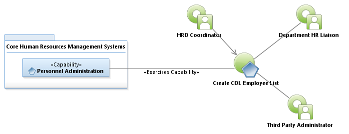
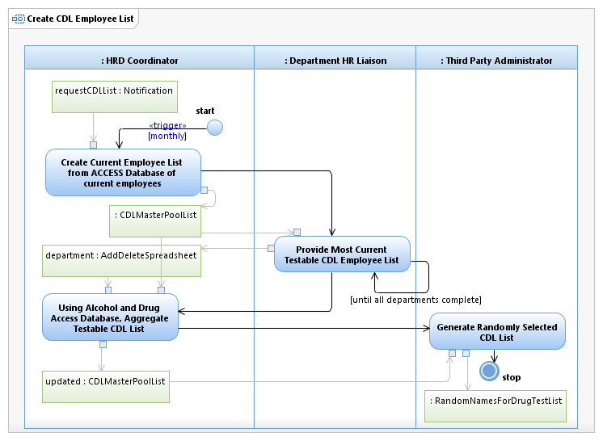

Use Case Model: Create CDL Employee List
Architect: Aaron Brown, IT Enterprise Architect Senior
Date Last Modified: 3/6/2013
User Review: Reyna Ruiz, Sandra Schirmer, Steven Dixon, Debbie Willms, Howard Hendrickson
Date: 3/6/2013
Monthly, HRD Coordinator receives Add/Delete Form (Excel spreadsheet) from Department HR Liaison. These spreadsheets are imported into Access Database used to generate authoritative list of alcohol and drug test candidates. This list is sent to Third Party Administrator to employ a random list generator to randomly select Commercial Drivers License (CDL) list.
Follow link to Role Definitions

Use Case Model: Create CDL Employee List

Activity Model: Create CDL Employee List
Activity Documentation
| Activity | Documentation |
|---|---|
| Using Alcohol and Drug Access Database, Aggregate Testable CDL List | After receiving Add/Delete spreadsheets forms, store into shared drives and import into the Alcohol and Drug Access Database. The database communicates with Banner using employee ID to obtain additional employee information (SSN, full name, department, etc.). |
Note: When the activity is self explanatory no documentation is provided.